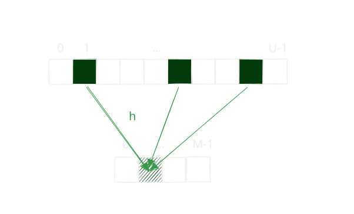

$\newcommand{\bit}{\{0,1\}}$ $\newcommand{\Universe}{\bit^u}$ $\newcommand{\CompressedUniverse}{\bit^m}$
Recall the situation we landed ourselves in the last lecture was that we have a universe of $U$ items.
However, we only wanted to use $M$ words of memory to store them.
We wanted to do so because we wanted to insert $n$ items as per our set interface.
Using $U$ cells allowed us to find keys in time $O(1)$, but the find_min and find_next operations now cost us
$O(U)$.
As $n \ll U$, a runtime of $O(U)$ is unacceptable. Thus, we want to find some map $h: [U] \rightarrow [M]$ that takes elements $x \in [U]$, and maps them to $h(x) \in [M]$, where $M = \Theta(n)$. This gave us the following picture.

Often we will denote a universe element $x \in [U]$ with its binary representation $x \in \bit^u$. Likewise, with mapped elements $h(x) \in \CompressedUniverse$.
We can also safely assume1 that $U$ and $M$ are powers of two, and if they are not we can always pad them the nearest power of two without losing much. So let $U := 2^u$ and $M := 2^m$. Now no matter how we pick this map $h$, by the averaging argument, there is some bucket such that at least $U/M$ universe elements would map to it.

As a result, an adversary who knows $h$ could pick to insert those $n$ universe elements such that they all lead to collisions. And then find will take time $O(n)$. This happens no matter how we pick $h$.

To defend against this attack we will use randomness. We will assume two things.
- Our data structure has a tape of random bits. Each bit is unbiased.
- The adversary using our data structure does not know the contents of these random bits, and therefore selects the data and the operations independent of this random tape.
Let $\mathcal{H} := \{ h: \bit^u \rightarrow \bit^m \}$ be the set of all functions that map universe elements to the smaller set. We will use our random tape to sample some $h \gets \mathcal{H}$ uniformly at random. As the adversary does not know our random tape, they will not know $h$. Initially we assume that we have no restriction on how many random bits we can use. Given that we can use as much randomness as we desire, the property we want is that each universe element be mapped to a bucket uniformly at random.
That is we want for any $x \in \Universe$ and any $y \in \CompressedUniverse$
$$ \Pr_{h \gets \mathcal{H}}\left[ h(x) = y \right] = \frac{1}{M} $$
You will show in Problem Set 2 that we need $\Theta(U\log_2 M) = \Theta(2^u m)$ random bits to sample $h$ uniformly from all of $\mathcal{H}$.
Now assume we could sample such a $h$. Then what is the expected length of the chain containing $x$ after $n$ inserts?
Let $S \subseteq \Universe$ be the set of $n$ inserted keys, and fix $x \in S$. Let $C_x$ denote the length of the chain of bucket $h(x)$ after $n$ inserts. Let $X_{x,x^\prime} = 1$ if $h(x) = h(x^\prime)$ and 0 otherwise, for $x^\prime \in S$.
\begin{align*} \mathbb{E}[C_x] &= \mathbb{E}\left[\sum_{x^\prime \in S} X_{x,x^\prime}\right] \\[10pt] &= \sum_{x^\prime \in S}\mathbb{E}[X_{x,x^\prime}] \\[10pt] &= 1 + \sum_{x^\prime \in S \setminus \{x\}} \mathbb{E}[X_{x,x^\prime}] \\[10pt] &= 1 + \sum_{x^\prime \in S \setminus \{x\}} \Pr_{h \gets \mathcal{H}}[h(x) = h(x^\prime)] \\[10pt] &\le 1 + \frac{n-1}{M} \\[10pt] &= O(1) \end{align*}
Universal Hash Functions
Notice that the only condition we really needed was the following.
Below is an efficient process by which we can define and sample a hash function from a universal hash family.
View each $x \in \Universe$ as a column vector of $u$ bits. Pick an $m \times u$ matrix $A$ whose entries are independent fair random bits, and define
$$ h_A(x) = Ax \pmod{2}. $$
It is clear that this scheme only needs $um$ bits as opposed to $Um$ bits.
You show in Problem Set 2, Problem 3 that we need far fewer bits to sample a universal hash function than to sample a fully random hash function.